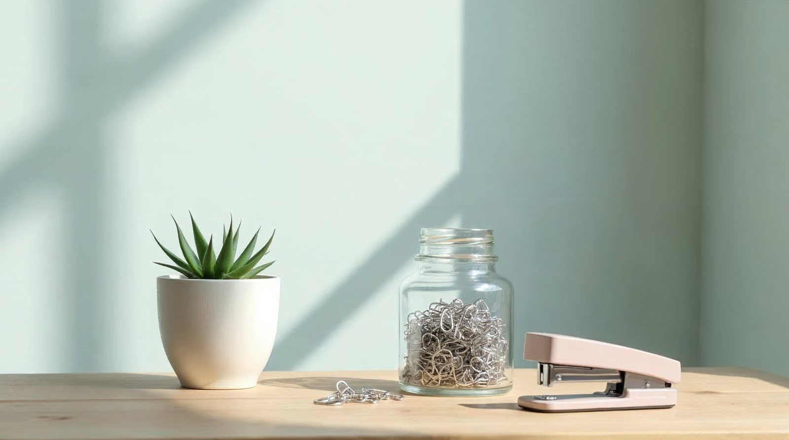

이종호 한의사 감수좋은꿈참사랑한의원 대표원장 (한의사 면허번호 19769)발행 2026-11-25 · 수정 2026-11-25
이 글의 차례
건강검진이나 내과에서 받은 혈액검사 결과를 어떻게 가져가야 하는지 묻는 분이 많습니다. 결과지 자체보다 날짜와 기준치가 함께 보이는 것이 중요합니다.
예를 들어 3년 치 건강검진 결과를 나란히 놓으면, 공복혈당이 해마다 조금씩 오르고 있는지, 간수치가 특정 해에만 높았는지가 한눈에 보입니다. 결과지 한 장만 볼 때는 알기 어려운 흐름입니다. 국민건강보험공단 검진 결과는 앱에서도 확인할 수 있어, 화면을 그대로 보여 주셔도 됩니다.
왜 날짜와 기준치가 중요할까요
- 같은 수치라도 언제 잰 것인지에 따라 의미가 달라질 수 있습니다.
- 검사기관마다 기준치가 조금씩 다를 수 있습니다.
- 여러 해의 결과를 나란히 보면 방향이 보입니다.
- 복용 약이 바뀐 시기와 함께 봐야 해석이 쉽습니다.
- 검사 전날 음주나 격한 운동이 일부 수치에 영향을 줄 수 있어 당시 상황을 함께 알면 좋습니다.
먼저 이렇게 여쭙니다
- 최근 혈액검사는 언제 받으셨나요?
- 결과에서 들은 설명이 있나요?
- 그 뒤 약이 바뀌었나요?
- 가장 걱정되는 수치는 무엇인가요?
일상에서 먼저 해 볼 수 있는 것
- 결과지를 해마다 같은 파일에 모아 두기
- 앱 화면은 날짜가 보이게 캡처하기
- 들은 설명을 한 줄로 메모하기
- 복용 중인 약 목록 함께 챙기기
- 검사 전날 술·운동 여부를 결과지에 메모해 두기
한의원에서 함께 살필 수 있는 경우
- 검진에서 혈당·콜레스테롤 경계 소견을 들은 경우 생활 리듬을 함께 살핍니다.
- 피로가 오래가는 경우 다른 기록과 함께 봅니다.
- 체중 변화가 있는 경우 인바디 결과와 나란히 봅니다.
좋은꿈참사랑한의원에서는 가져오신 결과를 참고해 생활 이야기를 여쭙고, 필요하다고 판단될 때 원내 당화혈색소 검사기나 혈액 검사기로 확인합니다. 수치의 진단과 약 조절은 내과에서 확인하도록 안내해 드립니다.
헷갈리기 쉬운 점
기준치 안에 있다고 해서 살펴볼 것이 없다는 뜻은 아니고, 조금 벗어났다고 해서 곧 병이라는 뜻도 아닙니다. 수치의 의미는 검사한 의료기관의 설명을 기준으로 하고, 한의원에서는 생활 상담의 참고로 삼습니다.
자주 하는 오해
- 원본 결과지가 있어야만 상담이 된다고 생각하는 분이 있지만, 날짜와 기준치가 보이는 사진이나 앱 화면으로도 충분합니다.
- 가장 최근 결과 한 장만 가져오면 된다고 여기기 쉬운데, 예전 결과가 함께 있으면 수치가 어느 방향으로 움직이는지 보기 쉬워집니다.

예를 들면 이런 경우입니다
- 예를 들어 회사 검진 결과를 이메일 PDF로 받은 경우라면, 휴대폰에 파일을 저장해 두었다가 진료실에서 화면으로 보여 주셔도 됩니다. 여러 해 결과가 있다면 파일 이름에 연도를 붙여 두면 찾기 쉽습니다.
- 예를 들어 내과에서 혈액검사 뒤 약이 바뀐 경우라면, 결과지와 함께 바뀐 약의 이름과 먹기 시작한 날을 적어 오시면 수치의 흐름을 이해하는 데 도움이 됩니다.
- 예를 들어 결과지 일부만 사진으로 찍어 온 경우라면, 항목 이름이나 기준치가 잘려 읽기 어려울 수 있습니다. 한 장 전체가 보이게 찍고, 필요한 부분을 한 번 더 가까이 찍어 두세요.

스스로 점검해 보세요
- 가장 최근 혈액검사 날짜와 기관을 알고 있다
- 결과지나 화면에 기준치가 함께 보인다
- 2~3년 전 결과도 찾을 수 있다
- 검사 뒤 바뀐 약과 그 시기를 알고 있다
- 검사 당시 들은 설명을 한 줄로 말할 수 있다
- 검사 전날의 음주·운동·식사를 기억한다
- 추가 검사를 권유받았는데 아직 받지 않았다
마지막 항목에 해당한다면 한의원 상담보다 권유받은 검사를 먼저 받아 보세요. 그 결과를 함께 가져오시면 생활 상담을 더 구체적으로 이어 갈 수 있습니다.
이렇게 기록해 오시면 상담이 쉬워집니다
- 검사 날짜와 기관
- 주요 수치와 기준치
- 그 뒤 바뀐 약과 생활
- 들은 설명 메모
- 검사 전날의 음주·운동·수면
이런 증상은 먼저 확인이 필요합니다
- 간수치나 혈당이 크게 벗어나 추가 검사를 권유받은 경우
- 눈·피부가 노래지거나, 갈증·소변이 부쩍 늘거나, 체중이 이유 없이 빠지는 경우
이런 신호가 있으면 한의원보다 가까운 병원이나 응급실을 먼저 찾으세요.
얼마나 지켜보고, 언제 확인하면 좋을까요
- 검사기관에서 몇 달 뒤 재검을 권유받았다면 그 시기에 맞춰 다시 검사받고, 그 사이의 생활 기록을 함께 가져와 주세요.
- 결과를 받고 몇 주가 지나도 설명을 듣지 못했다면 검사한 기관에 먼저 문의해 보세요.
- 결과지를 찾지 못했더라도 검사 시기와 들은 설명만 기억해 오셔도 상담을 시작할 수 있습니다.
처음 오시면 이렇게 진행합니다
첫 방문에는 접수 때 기본 정보를 적고, 가져오신 결과지나 앱 화면과 복용 중인 약 목록을 함께 보여 주세요. 진료실에서는 모든 분께 맥을 짚으며 불편한 점과 결과에서 걱정되는 수치를 여쭙고, 필요한 진찰을 더합니다.
필요하다고 판단될 때 당화혈색소 검사기나 혈액 검사기, 인바디 770으로 지금 상태를 확인하고, 가져오신 결과와 나란히 놓고 봅니다. 그다음 생활에서 함께 살펴볼 점을 설명드리고, 다음 방문 때 기록해 오시면 좋은 내용을 안내합니다. 원내에서 확인할 수 있는 검사 항목과 비용은 방문 전 전화(02-815-7510)로 확인해 주세요.
관련 글

여쭙는 것
- 최근 혈액검사는 언제 받으셨나요?
- 결과에서 들은 설명이 있나요?
- 그 뒤 약이 바뀌었나요?
생활에서 해 볼 것
- 결과지를 해마다 같은 파일에 모아 두기
- 앱 화면은 날짜가 보이게 캡처하기
- 들은 설명을 한 줄로 메모하기
한의원에서 함께 살필 것
- 검진에서 혈당·콜레스테롤 경계 소견을 들은 경우 생활 리듬을 함께 살핍니다.
- 피로가 오래가는 경우 다른 기록과 함께 봅니다.
- 체중 변화가 있는 경우 인바디 결과와 나란히 봅니다.
먼저 확인이 필요한 신호
- 간수치나 혈당이 크게 벗어나 추가 검사를 권유받은 경우
- 눈·피부가 노래지거나, 갈증·소변이 부쩍 늘거나, 체중이 이유 없이 빠지는 경우
한눈에 보는 표
| 구분 | 핵심 |
|---|---|
| 여쭙는 것 | 최근 혈액검사는 언제 받으셨나요? 결과에서 들은 설명이 있나요? |
| 생활에서 해 볼 것 | 결과지를 해마다 같은 파일에 모아 두기 앱 화면은 날짜가 보이게 캡처하기 |
| 한의원에서 함께 살필 것 | 검진에서 혈당·콜레스테롤 경계 소견을 들은 경우 생활 리듬을 함께 살핍니다. 피로가 오래가는 경우 다른 기록과 함께 봅니다. |
| 먼저 확인이 필요한 신호 | 간수치나 혈당이 크게 벗어나 추가 검사를 권유받은 경우 눈·피부가 노래지거나, 갈증·소변이 부쩍 늘거나, 체중이 이유 없이 빠지는 경우 |
자주 묻는 질문
휴대폰 화면만 있어도 되나요?
네, 날짜와 기준치가 보이면 충분합니다.
오래된 결과도 가져가요?
예전 결과가 있으면 흐름을 보는 데 도움이 됩니다.
한의원에서 혈액검사를 하나요?
진찰 후 필요하다고 판단될 때 확인하며, 진단은 내과에서 합니다.
결과지 원본을 드려야 하나요?
아닙니다. 보여 주시기만 하면 되며 원본은 그대로 보관하세요.
좋은꿈참사랑한의원은 재진 때 지난번 이야기부터 이어서 여쭙니다. 진료시간과 예약은 오시는 길에서 확인하세요.
어디서 상담받을 수 있나요?
좋은꿈참사랑한의원은 서울 동작구 만양로2길 2 신성빌딩 3층·5층(서울 동작구 상도동, 7호선 상도역 3번 출구 근처)에 있습니다. 한의사 3명(이종호 대표원장, 조영기 수석진료원장, 정원영 진료원장)이 진료합니다. 진료시간은 평일 09:30~20:00(점심 13:00~14:00), 토·일·공휴일 09:30~15:00이며, 방문 전 전화로 확인을 권합니다. 예약은 네이버 예약, 카카오톡 상담, 전화 02-815-7510로 받습니다.
이 글은 일반적인 건강 정보이며 개인의 진단이나 치료를 대신하지 않습니다. 증상이 있거나 복용 중인 약이 있다면 진료를 통해 확인하세요. 치료 효과는 개인마다 다를 수 있습니다.
작성 기준: 일반적으로 알려져 있는 건강 정보를 참고해 정리했습니다(대표원장 감수). 증상 기록은 1~2주 동안 하루 1회, 비슷한 시간에 적어 오시면 지난 상태와 비교하기 쉽습니다.